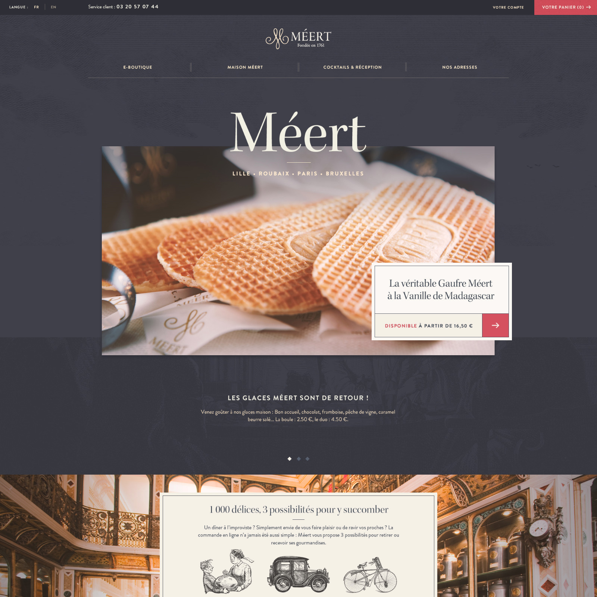
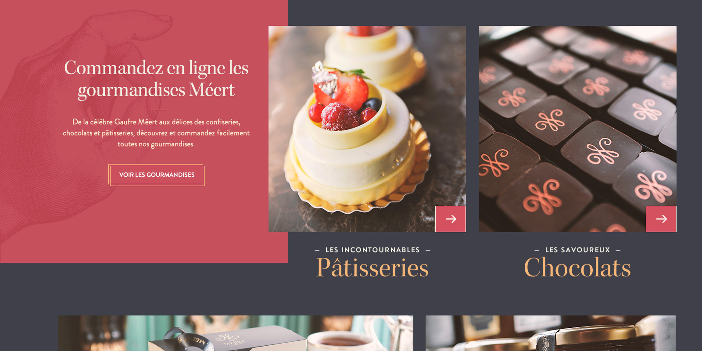
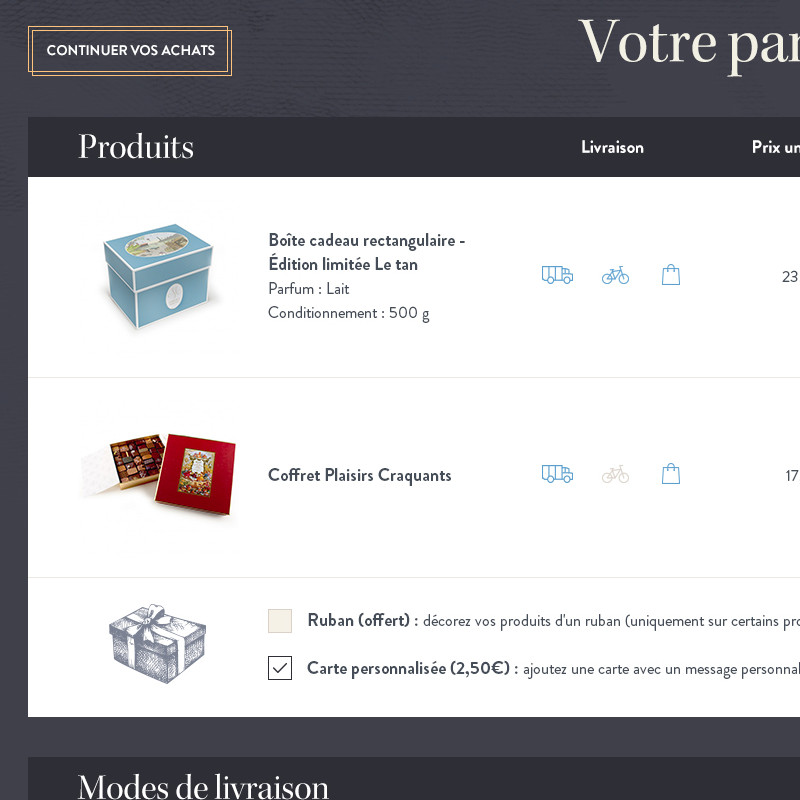
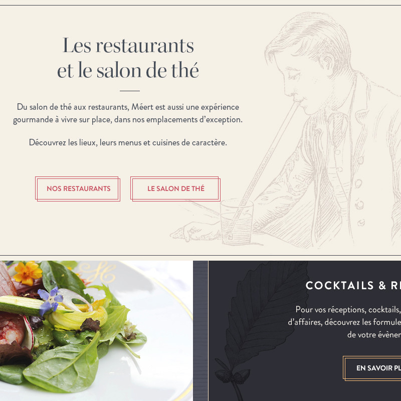

Méert

- Art Direction
- UI Design
We set off on a project to breathe fresh life and unity into the online presence of Lille's renowned pastry shop, Meert.
When we began the redesign of meert.fr, the brand was scattered across four different websites: two online stores and two showcase websites. Our aim was crystal clear – to strengthen and consolidate everything into a single, powerful platform. This endeavor was backed by a more ambitious artistic vision, one that paid homage to the centuries-old history and expertise of Meert.
The result? A singular, all-encompassing digital haven that does justice to Meert's heritage.



